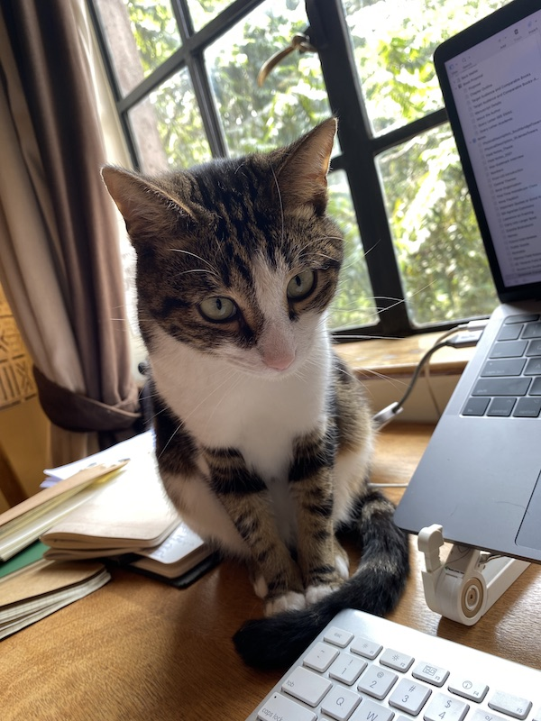

Rectangle | Square
#1 | Book, Bay Watch, Swamp Dragons
An Introduction
Hi there. Sometime in life you've bumped into me, Jonathan Tarleton. For that crime, I've subscribed you to a newsletter I plan to send out on a semi-monthly basis. I'll write about what I'm working on, how my book is coming along, things I'm reading and thinking about. It's an experiment, so I make no promises, but I hope it will be of interest nonetheless. If not, no worries—you can unsubscribe below.
Who is this guy, you ask? I'm a writer and city planner. I currently live in Nairobi after a decade in New York and Boston, and before that the US South. I make prints from linocuts. I enjoy being outside. I have an unusual love for postal systems. I follow The Arsenal.
I'll explore some of that here. To start, I'll separate these missives into Happenings (project updates), T. Recs (what I'm reading, watching, otherwise consuming or experiencing that I like), and Tangents (unexpected forays into a topic during writing or research). A palate cleanser will follow in the curvy shape of Kaju, our beloved cat.
The title of the newsletter may (or may not) shed some light on what to expect. It refers to the rectangle-square relationship: a square is a rectangle but a rectangle isn't a square. For no particular reason, I find this pleasing, to the point that I did the below to an outlet cover in our apartment. I like the distinction. I like that both feature parallels and connections. I like finding things that fit their schema. And yet I find my own attachment a little inexplicable. Welcome aboard.

Happenings
For the past couple years I've been working on a narrative nonfiction book tentatively titled For Our Own Good. It follows community-splitting debates within two social housing cooperatives to explore competing ideas of ownership of home in the US and pathways toward the ethic of stewardship needed to maintain our public goods.
It's been a banner couple months: I finished a full draft, got sick of my own voice editing the manuscript, and sent it off to some kind readers for feedback. After a good bit of turnover at the publisher to whom I'd initially sold the project, I'm delighted that the venerable Beacon Press will publish the book in early 2025 if all goes as planned. More on this process in future editions.
That's been a full-time endeavor since March, but I continue to think about a project I worked on with Seed Commons earlier this year. They're a network of community development financial institutions and community-based loan funds across the US dedicated to supporting worker cooperatives and, more generally, a more democratic and less extractive economy. I love their ambition. We scoured the programs funded through recent big federal infrastructure legislation (the Inflation Reduction Act, the Infrastructure Investment and Jobs Act) to identify particular areas of opportunity for worker co-ops. These represent a generational opportunity to scale more equitable businesses and build worker-power in industries from building retrofits to environmental remediation.
Hot off the presses, I published an ode to Jamaica Bay, an overlooked, under-appreciated, but essential part of New York City with Hell Gate. The publication (and article, I'd contend) is worth checking out. They are a relatively new worker-owned outfit that's publishing quality stuff about New York. The added bonus is that we share the belief that the Hell Gate bridge is the city's finest.
As I wrap up the book through the end of the year, I'll also be taking on new work through my consulting practice All Commons and pitching articles here and there. Get in touch if you're interested in working together!
T. Recs
1. Ted Chiang on ChatGPT and AI
2. Saga by Brian K. Vaughan and Fiona Staples
3. Personal Stereo by Rebecca Tuhus-Dubrow
4. The HBO adaptation of My Brilliant Friend
Tangents
One of my favorite, and occasionally maddening, parts of writing is needing a quick answer to a mostly inconsequential question, then ending up on some weird research foray. First, the question, then ...---> ... the tangent.
When did the NBA's New Jersey Nets move to Brooklyn? ---> Learning that the franchise seriously considered rebranding as the New Jersey Swamp Dragons in the late 90s. Missed opportunity.

Many thanks to my accountability partner Kaju.
Thanks for reading and take good care,
Jonathan